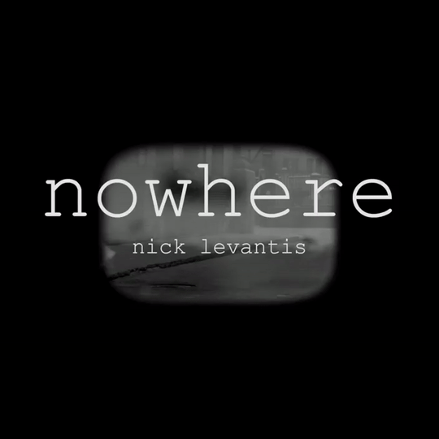

-

-

- 
About
Born in Athens, Greece, Nick grew up in a fertile cultural and musical period at the early eighties. He started his first post punk band called “Prisoners” at the age of fifteen together with his friends doing their first rehearsals and concerts in the grey industrial zone of Piraeus port.
At mid eighties Nick’s computer programming studies and synths knowledge helped him to step deeper into the world of electronic music and digital art. Alongside the same time tried to express images and feelings through digital art creations combining them with his musical ideas and experimented so to create interactivity between them.
At early nineties was the singer and guitar player in a fairly successful alternative underground band at that time in Greece, Sonar Blips (Wipe Out Records). Over the years he has played and collaborated with other artists experimenting through different music genres.
Today Nick creates pieces of music trying to differentiate and surpass the limits of specific genres with basic philosophy that there is no evolution in art without the presence of internal or social reversals.
The last years has created many genre agnostic songs that are meant to travel the listener to the world of electronic music.